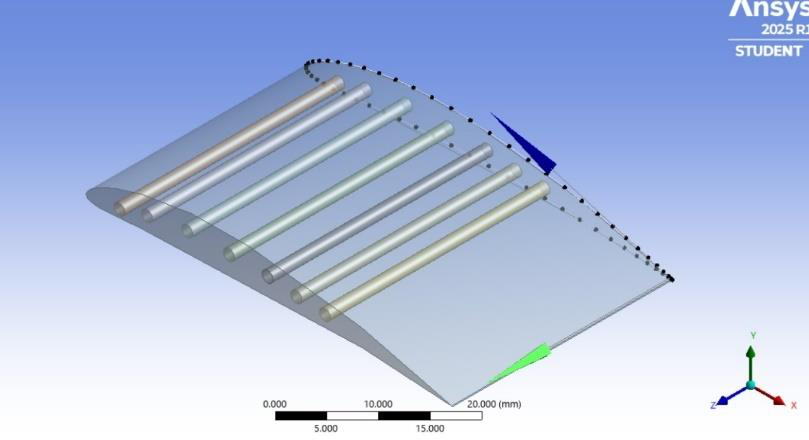
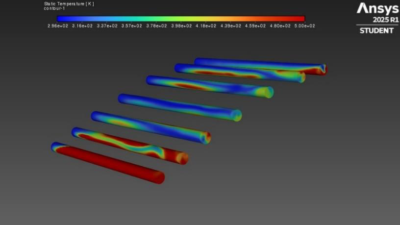
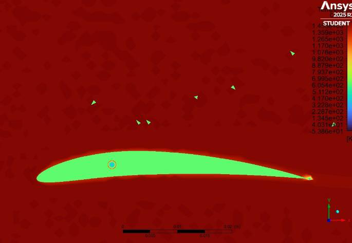

Engineering objective
Study hot-gas flow around a simplified turbine blade and coolant flow through its internal passages, identifying temperature gradients and areas where cooling may need improvement. The report describes a three-dimensional blade model with cooling holes, an external domain and a heat-transfer analysis.
Simulation methodology
The workflow covers geometry preparation, mesh generation, steady pressure-based solution with the energy equation, and visualization of velocity, pressure and temperature fields. The report states 1,333,654 nodes and 114,563 elements; those values are reproduced as reported rather than independently verified.
Selected simulation figures






Interpretation
Reported contour plots suggest substantial thermal gradients across the blade and localized temperature variations around coolant passages. These figures support a qualitative investigation of cooling behavior; they do not by themselves establish a quantified cooling improvement against a validated baseline.
Team project. The published page summarizes the supplied report, and does not attribute individual tasks beyond the documentation.